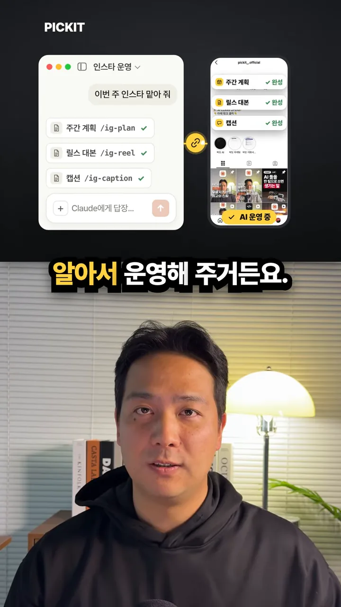
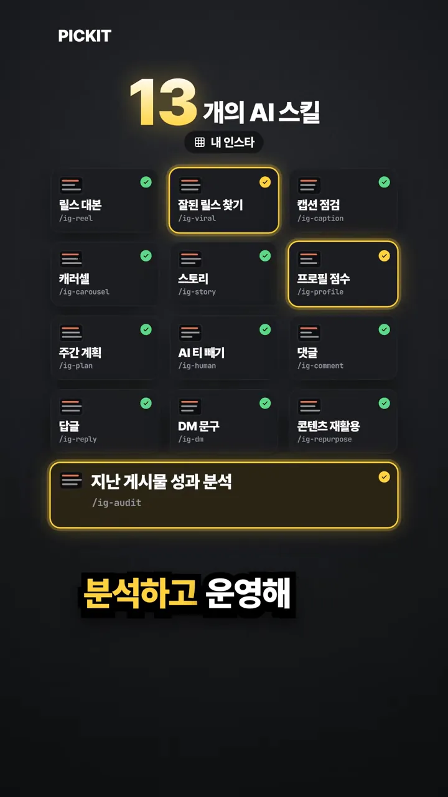
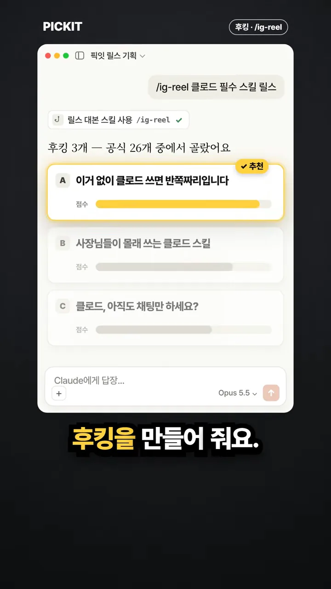
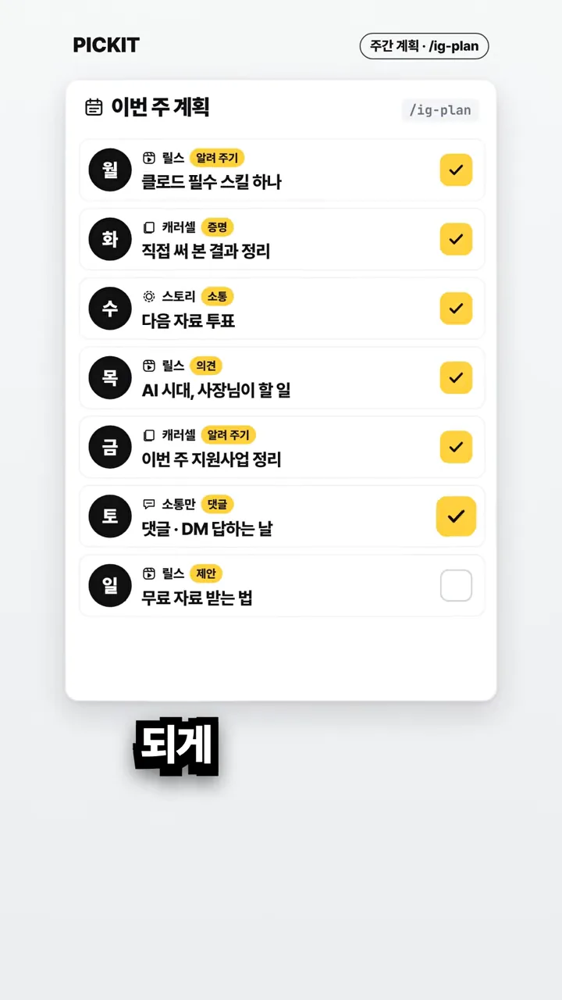
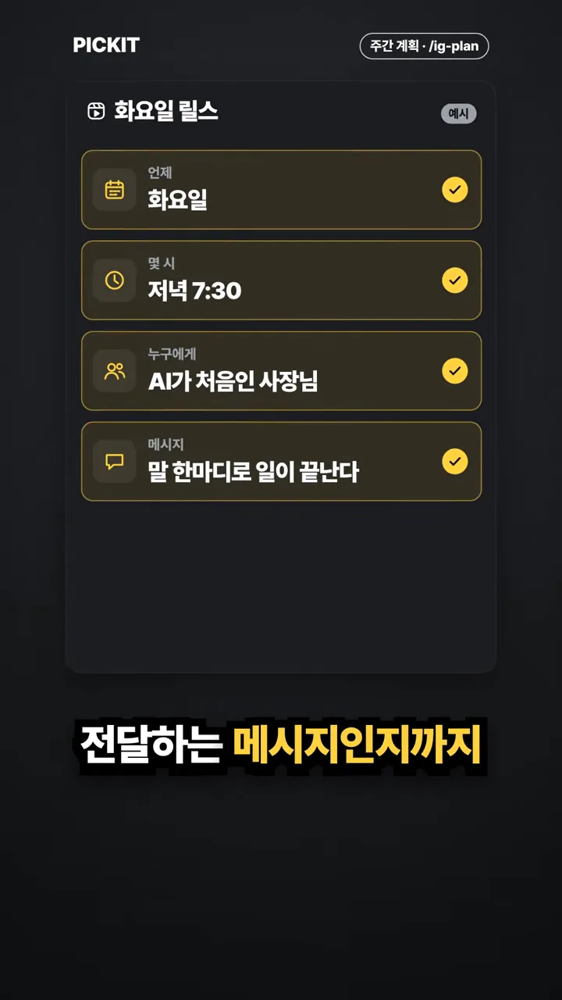
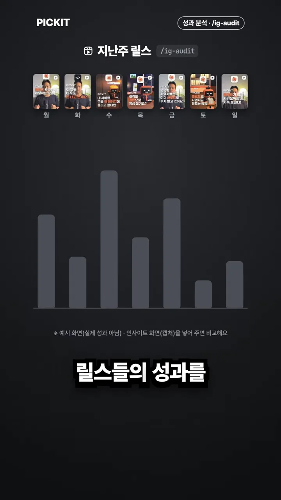
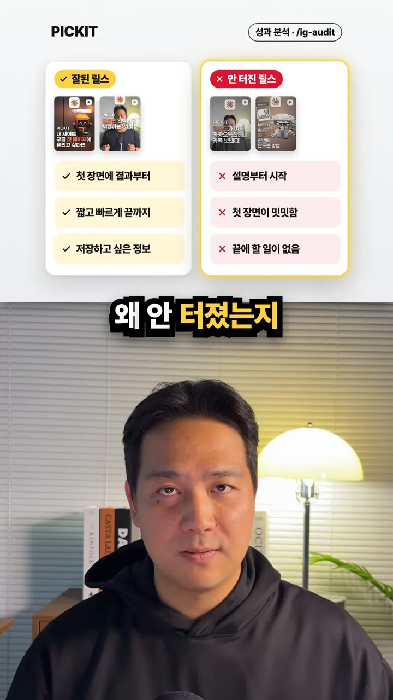
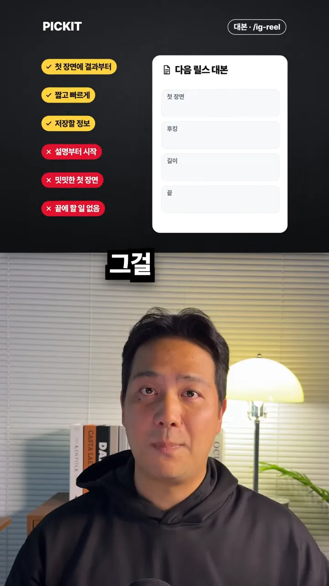
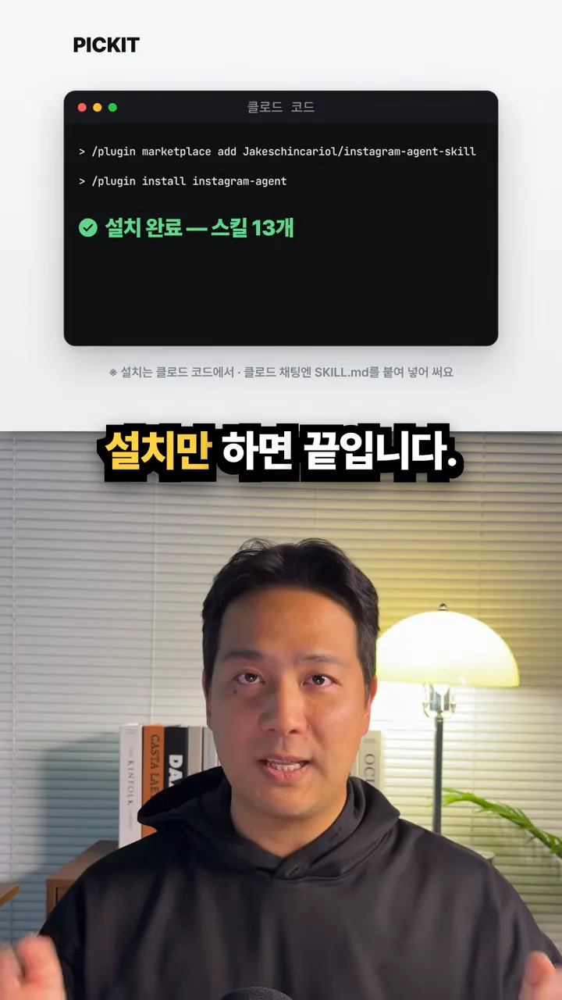

인스타 운영을 13개 스킬로 나눠요
영상은 클로드 채팅창에 '이번 주 인스타 맡아 줘'라고 쓰는 장면으로 시작해요. 왼쪽 창에서 주간 계획 /ig-plan, 릴스 대본 /ig-reel, 캡션 /ig-caption이 차례로 체크되고, 오른쪽 휴대폰 화면에는 같은 세 항목이 '완성'으로 바뀌어요.

이 일을 나눠 맡는 스킬은 모두 13개예요. 화면은 각 칸에 한국어 이름과 명령을 함께 적고, 영상에서 가장 강조하는 '잘된 릴스 찾기', '프로필 점수', '지난 게시물 성과 분석' 칸에 노란 테두리를 둘러요.

화면에 나온 이름을 표로 옮기면 이래요.
| 화면 이름 | 명령 | 화면 이름 | 명령 |
|---|---|---|---|
| 릴스 대본 | /ig-reel | AI(Artificial Intelligence) 티 빼기 | /ig-human |
| 잘된 릴스 찾기 | /ig-viral | 댓글 | /ig-comment |
| 캡션 점검 | /ig-caption | 답글 | /ig-reply |
| 캐러셀 | /ig-carousel | DM(Direct Message) 문구 | /ig-dm |
| 스토리 | /ig-story | 콘텐츠 재활용 | /ig-repurpose |
| 프로필 점수 | /ig-profile | 지난 게시물 성과 분석 | /ig-audit |
| 주간 계획 | /ig-plan |
릴스 후킹과 한 주 계획
첫 번째로 소개하는 건 릴스 대본 스킬 /ig-reel이에요. '클로드 필수 스킬 릴스'를 부탁하자 후킹 공식 26개 중에서 3개를 골랐다고 답하고, A·B·C 세 후보에 점수 막대를 붙여요. 점수가 가장 긴 A에 '추천' 표시가 달려요.

다음은 주간 계획 /ig-plan이에요. 영상은 매번 무엇을 올릴지 짜는 게 가장 힘들다고 하면서, 물음표뿐이던 한 주를 요일별로 채운 화면을 보여 줘요. 요일마다 형식과 목적 태그가 붙어 있어요.

| 요일 | 형식 | 목적 | 내용 |
|---|---|---|---|
| 월 | 릴스 | 알려 주기 | 클로드 필수 스킬 하나 |
| 화 | 캐러셀 | 증명 | 직접 써 본 결과 정리 |
| 수 | 스토리 | 소통 | 다음 자료 투표 |
| 목 | 릴스 | 의견 | AI 시대, 사장님이 할 일 |
| 금 | 캐러셀 | 알려 주기 | 이번 주 지원사업 정리 |
| 토 | 소통만 | 댓글 | 댓글·DM 답하는 날 |
| 일 | 릴스 | 제안 | 무료 자료 받는 법 |
계획은 게시물 하나 단위로도 내려가요. 화요일 릴스 카드에는 언제, 몇 시, 누구에게, 어떤 메시지를 전할지 네 칸이 모두 채워져 있어요. 그 직전 화면은 '반응 좋은 때'를 평일 저녁으로 잡는데, 아래 작은 글씨로 '예시 화면(실제 분석 결과 아님) · 재료는 내가 넣어 준 인사이트'라고 밝혀요.

지난주 릴스 성과 분석과 설치
영상이 '제일 미쳤다'고 꼽는 부분이에요. 성과 분석 스킬 /ig-audit이 지난주 월요일부터 일요일까지 올린 릴스를 막대그래프로 나란히 놓아요. 이 화면에도 '예시 화면(실제 성과 아님) · 인사이트 화면(캡처)을 넣어 주면 비교해요'라는 안내가 붙어 있어요.

그다음 잘된 릴스와 안 터진 릴스를 두 칸으로 나눠 이유를 적어요. 왼쪽 노란 칸은 첫 장면에 결과부터, 짧고 빠르게 끝까지, 저장하고 싶은 정보예요. 오른쪽 빨간 칸은 설명부터 시작, 첫 장면이 밋밋함, 끝에 할 일 없음이에요.

분석은 여기서 끝나지 않고 다음 대본으로 이어져요. 왼쪽에 쌓인 여섯 개 판단 태그가 오른쪽 '다음 릴스 대본'의 첫 장면, 후킹, 길이, 끝 칸으로 들어가요. 오른쪽 위 태그가 다시 /ig-reel로 바뀐 데서 보듯, 분석 스킬과 대본 스킬이 이어서 일해요.

가격과 설치
영상은 이 모든 게 무료이고 설치만 하면 된다고 말해요. 설치 화면에는 클로드 코드에서 입력하는 명령 두 줄과 '설치 완료 — 스킬 13개'가 보이고, 아래에 '설치는 클로드 코드에서 · 클로드 채팅엔 SKILL.md를 붙여 넣어 써요'라는 안내가 있어요.

/plugin marketplace add Jakeschincariol/instagram-agent-skill
/plugin install instagram-agent'무료'에는 조건이 있어요. 영상 마지막 화면의 작은 글씨는 '스킬은 무료(MIT) · 클로드 코드는 유료 요금제'라고 적어요. 스킬 자체는 MIT 라이선스라 공짜지만, 그것을 돌리는 클로드 코드는 유료 요금제가 필요하다는 뜻이에요.